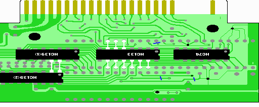

９．その他のICの取り付け
ここで基板裏面にHC74、HC133、HC139(2個)を一気に取り付けます。

実体図のように右からHC74、HC133、HC139を配置します。HC139は「ICの足の加工」で書いたHC139(1)を
コネクタに近い方、HC139(2)を遠い方に配置します。
HC74の位置は割と適当で構いません。実体図を参考にとりあえず両面テープで基板に固定します。
HC133の位置は実体図を参考に慎重に決めてください。HC133の5〜7ピンが2212P003の32〜30ピンに、
HC133の10〜15ピンが2212P003の19〜14ピンに合うように両面テープで基板に固定し、半田付けします。
そのためにHC133の5〜7ピン、10〜15ピンはピン先を切らずに広げていました。回路図ではスロットの信号
につなぐように見えますが、実際はスロットからの信号が2212P003に来ているので、そこにつなげています。
HC139の位置も割と適当ですが、HC139(1)の13、14ピンがHC139(2)の2、1ピンに合うように両面テープで
基板に固定してください。そして、HC139(1)の13ピンと139(2)の2ピン、HC139(1)の14ピンとHC139(2)の
2ピンを半田付けします。
これで回路図の赤でかかれた部分ができました。
 次へ
次へ